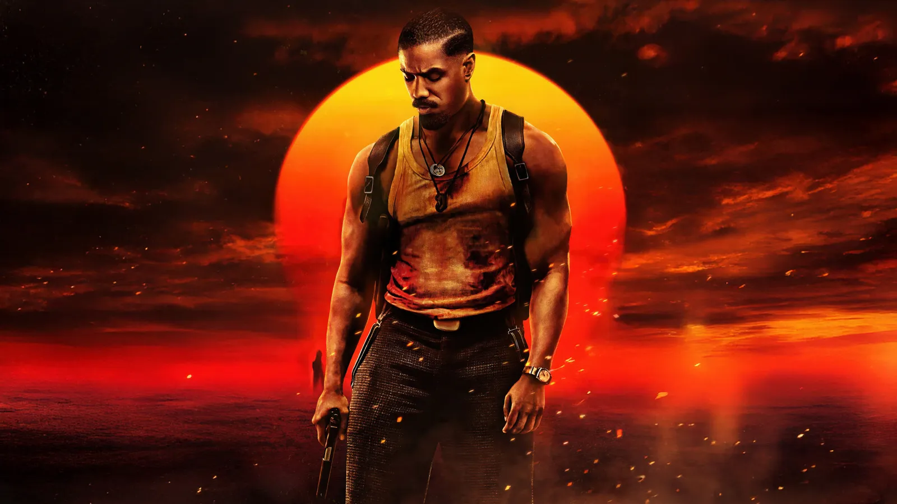

Film
Evil Dead Burn
Le meilleur des trois, mais toujours prisonnier du moule. Une mise en scène ambitieuse et une bande-son immense, mais un film qui peine encore à trouver sa propre identité.
Lire plus
Le meilleur des trois, mais toujours prisonnier du moule. Une mise en scène ambitieuse et une bande-son immense, mais un film qui peine encore à trouver sa propre identité.
Lire plus
Spielberg dépassé par son propre sujet. Sauvé par Emily Blunt et de bonnes scènes d'action, mais plombé par un rythme endormant et une conclusion qui ne tient pas ses promesses.
Lire plus
Une bonne base héroïque, mais une normalité. Milly Alcock et Lobo portent le film à merveille, mais des personnages secondaires sous-exploités et un méchant trop fade freinent l'ensemble.
Lire plus
Une fresque historique solide mais un biopic déséquilibré. Le film fonctionne mieux comme récit de la France libre que comme portrait profond de De Gaulle.
Lire plus
Simple, efficace, et ça marque. Un film d'horreur redoutable dans son ambiance et sa maîtrise visuelle. Honnêtement dans mon top 3 du genre.
Lire plus
Le roi sans ses ombres. Brillant dans ses fulgurances, lacunaire dans ses silences. Un biopic qui assume ce qu'il est : une célébration. Pas une radiographie. Et malgré tout, ça marche.
Lire plus
Une masterclass visuelle et narrative. Une histoire d'une beauté rare, portée par des personnages inoubliables et une identité visuelle hors du commun. Je dois des excuses au Studio Ghibli.
Lire plus
Une surprise solide. Malgré un visuel un peu trop gris, le film impressionne par sa puissance et une OST magistrale signée Hans Zimmer.
Lire plus
Un film d'une justesse incroyable, porté par des interprétations magistrales.
Lire plus
Une réinterprétation viscérale et moderne d'un classique gothique.
Lire plus
Un film tendu, sensuel et intelligent, qui transforme le sport en champ de bataille émotionnel. Audacieux dans l'intention.
Lire plus
Un chef-d'œuvre déchirant où la guerre est racontée à hauteur d'enfant. Une œuvre bouleversante et profondément humaine.
Lire plusUn duel viscéral entre maître et élève, où la passion pour la perfection devient une guerre psychologique.
Lire plus
Sinners vous plonge dans un univers où le passé rencontre l'invisible. Une expérience cinématographique incontournable !
Lire plusUne équipe de personnages fascinants qui apporte une nouvelle dimension au MCU, entre lutte intérieure et quête de rédemption.
Lire plus
Robot Sauvage est une réflexion poignante sur la nature humaine. Porté par des effets spéciaux impressionnants et une narration touchante.
Lire plus
Flow est une fable poétique et sensorielle qui parvient à captiver par la puissance de son animation. Une œuvre contemplative.
Lire plus
Un bon film d'action avec des scènes impressionnantes, mais qui n'apporte rien de marquant à l'univers du MCU.
Lire plusUn film réussi, mais qui aurait pu offrir plus de surprises. L'introduction de Shadow et la qualité des scènes d'action le placent en haut de la saga.
Lire plus